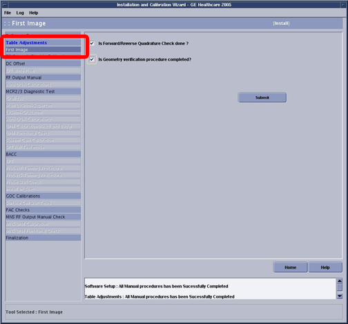

GE Exclusive Use Only
Direction 5440000, Rev# 5
Signa HDxt Service Methods
Module Version 1.0, Version Date 4/26/07
GE Exclusive Use Only |
| Required Persons | Preliminary Reqs | Procedure | Finalization |
|---|---|---|---|
| 1 | Not Applicable | 90 mins | Not Applicable |
During “First Images” there are two tasks that must be completed and checked off:
Forward Reverse Quadrature Check.
Geometry Verification.
| Item | Qty | Effectivity | Part# | Manufacturer | |
|---|---|---|---|---|---|
| Green Solution, No Loader | 1 | 1.5T With Old Style Head Coil | 2131027-2 | - | |
| Green Solution, With Loader | 1 | 1.5T With New Style Head Coil | 2322997-2 | - | |
| Clear Solution, No Loader | 1 | 3.0T Long Bore Magnet (E2) | 2258365 | - | |
| Green Solution, With Loader | 1 | 3.0T Short Bore Magnet | 2322997-2 | - | |
Insert the Service Key.
Launch the Service Browser (Common Service Desktop).
Click on the Calibration Tab
If you are in Install or Upgrade mode, click on [Install and Calibration Wizard] ⇒ [Click here to start this tool].
If it is required to be completed, the First Images checklist will be one of the first items listed in the ICW.. See Illustration 1.
Illustration 1: First Images

Perform Forward Reverse Quadrature checks. When this is complete, check the box next to “Is Forward/Reverse Quadrature Check done?”
Perform Geometry Verification that have been ordered by the customer. When this is complete, check the box next to “Is Geometry verification procedure complete”.
Click [Submit].
Return to the ICW procedure for information regarding how to advance to the next calibration and for links to other calibration procedures.